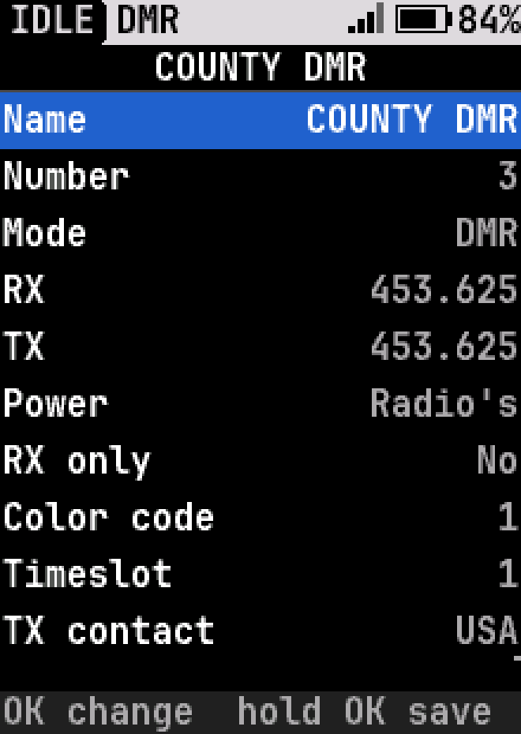
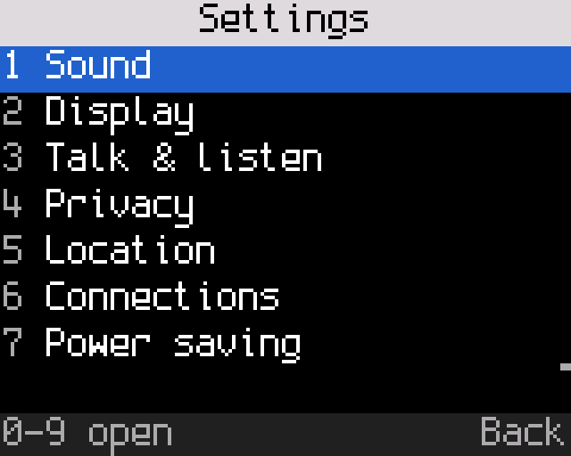
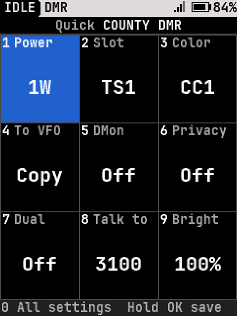
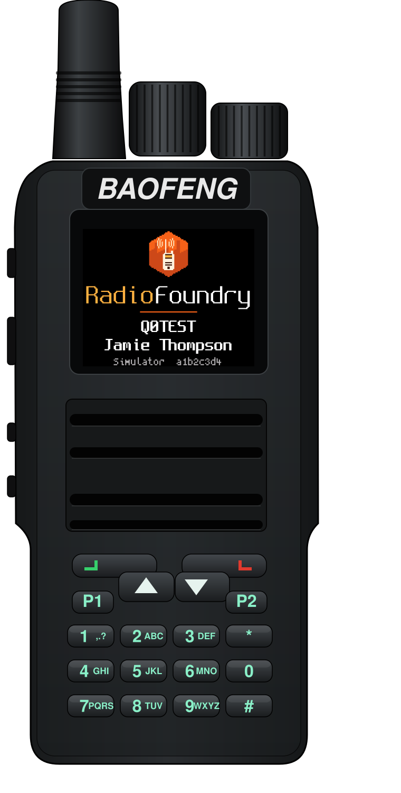

Full
Every feature the radio supports.
Esclude: Niente
Firmware multimodo open source per radio digitali: DMR, P25, NXDN e FM. Licenza MIT.
Gratis per sempre. Si installa sulla tua radio direttamente dal browser, con qualsiasi sistema operativo; nessun software da scaricare.








Supportata
FM·DMR·P25·NXDN · 136-174 / 400-480 MHz · AM banda aerea 108-137 MHz · FM broadcast 87-108 MHz

Retevis RT84
Supportata
FM·DMR·P25·NXDN · 136-174 / 400-480 MHz

Baofeng DM-1801
Supportata
FM·DMR·P25·NXDN · 136-174 / 400-470 MHz · AM banda aerea 108-137 MHz · FM broadcast 87-108 MHz

Kydera CDR-300UV
Supportata
FM·DMR·P25·NXDN · 136-174 / 400-480 MHz · FM broadcast 87-108 MHz

TYT MD-390, Retevis RT3
Supportata
FM·DMR · 400-480 MHz or 136-174 MHz (one band per radio)

TYT MD-UV390, TYT MD-UV390 Plus 10 W
Supportata
FM·DMR·P25·NXDN · 136-174 / 400-480 MHz

Supportata
FM·DMR·P25·NXDN · 136-174 / 400-480 MHz

Retevis RT90
Supportata
FM·DMR·P25·NXDN · 136-174 / 400-480 MHz

Supportata
FM·DMR·P25·NXDN · 902-928 MHz
Non vedi la tua? Indicaci il modello e valuteremo di aggiungerla.
Richiedi una radioEvery feature the radio supports.
Esclude: Niente
For amateur radio. Leaves out business features.
Esclude: Basic privacy (Motorola / Anytone BP), Motorola TMS text format, ARS registration, LRRP location, Control station mode (boot as network, PC answers data, fixed link), SNMP v2c agent and traps (USB and over the air)
For business and public service radios. Leaves out amateur-only features.
Esclude: MMDVM hotspot, APRS: AFSK positions, status, messages; DMR positions; KISS TNC
Personalizza la tua build del software con le funzioni che vuoi, direttamente dal browser.